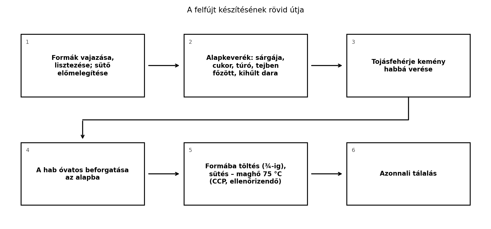

A vendéglátó konyhában a felfújt és a puding két olyan étel, ahol a legkisebb hiba is azonnal látszik. A felfújt a sütőből kivéve magas, könnyű és illatos, de ha rosszul kevered a habot, kinyitod a sütőajtót, vagy nem azonnal tálalod, a közepe besüpped. A pudingnál pedig elég egy rossz hőfok vagy egy csomós keverés, és az eredmény nem lesz selymes, hanem darabos vagy híg. Ebben az alfejezetben azt tanulod meg, hogyan készíts felfújtat, amely a tálalás pillanatáig megőrzi tartását, és hogyan készíts sima, jól dermedő pudingot.
Képzeld el, hogy ebédmenü desszertjeként túrófelfújtat készítesz. Előtted van a túrós alap, mellette a fényes tojásfehérjehab. Ha a habot kanállal erősen „belekevered”, a levegő távozik, és a massza már a sütőbe kerülés előtt összetörik. Ha viszont óvatosan, alulról-felülre mozgatva forgatod bele, a sütőben a bennmaradt levegő kitágul, a gőz megemeli, és magas felfújtat kapsz. A felfújt készítésének rövid útja:

Definíció. A felfújt (franciául soufflé) olyan sütőben készülő, lazított étel, amelyben a tojásfehérje kemény habja adja a szerkezetet. Édes változata desszert, sós változata meleg előétel vagy önálló étel. A klasszikus felfújt alapja lehet túró, rizs, zöldségpüré, gyümölcspüré vagy sós besamel, ehhez adjuk a tojássárgáját, az ízesítőket, végül a kemény habot.
Szabály. A tojásfehérjét mindig zsírmentes, tiszta edényben verd kemény habbá. A hab akkor jó, ha fényes, a habverőn üstököt húz, és óvatosan megfordított edényből nem folyik ki. A habot nem keverjük, hanem forgatjuk: az alapkeverékbe először kevés habot keverünk lazítás céljából, majd a többi habot vágó, alulról-felülre irányuló mozdulatokkal forgatjuk bele.
A hab próbájától a kész felfújtig a képsor mutatja a mozdulatokat; az 5. és a 6. kép a helyes és a hibás eredményt hasonlítja össze.
A 3. képen a spatula alulról felfelé emeli a masszát, miközben a tálat forgatod: így a hab levegője bent marad. Az összeesett felfújt (6. kép) oka a túlkeverés, a sütőajtó nyitogatása vagy a késői tálalás. A HTML-kiadásban a lépéseket egyenként lejátszhatod.
Szabály. A felfújtformát egyenes falú, magas szuffléformával vagy hőálló tálkával készítsd elő. A belsejét vékonyan vajazd ki, majd hintsd meg finomliszttel, édes felfújtnál részben porcukorral, sósnál reszelt sajttal. Ez a réteg segíti, hogy a massza felfelé tudjon növekedni, és ne ragadjon az edény falához.
Szabály. A sütőt előre melegítsd 180–200 °C-ra. A felfújtat forró sütőbe tedd, és sütés közben tilos az ajtót nyitogatni, mert a hirtelen hőmérséklet-csökkenéstől a hab összeesik. A kész felfújt magas, a teteje aranybarna, a közepe átsült, de puha és rugalmas (maghőmérséklet legalább 75 °C; ellenőrizendő). Azonnal tálald, mert a bennrekedt gőz lehűlésekor a szerkezet összehúzódik.
Definíció. A puding tojással és/vagy keményítővel sűrített, tejre vagy pürére épülő keverék, amelyet főzhetünk, gőzben dermeszthetünk vagy sütőben, vízfürdőben süthetünk. A puding lehet desszert, de sós változatban is készíthető.
Szabály. A pudingok három fő típusa: - Főzött puding: tűzhelyen, folyamatos keverés mellett, éppen forrásig sűrítjük, majd hidegen dermesztjük. Például vanília- vagy csokoládépuding. - Gőzben főtt puding: a masszát kivajazott formába töltjük, lefedjük, vízfürdőbe állítjuk, és lassú gőzben vagy sütőben, vízfürdőben dermesztjük. Például gyümölcsös, fűszeres angolos puding vagy rizspuding. - Sült puding: szintén vízfürdőben sütjük, ilyen a karamellpuding (crème caramel).
Szabály. A vízfürdőhöz magasabb tálba állítsd a formát, és önts köré annyi forró vizet, hogy az a forma oldalának körülbelül kétharmadáig érjen. A víznek soha nem szabad erősen forrnia, mert a puding lyukacsos, túlfőtt állagú lesz. A forma tetejét lazán fedd le alufóliával vagy sütőpapírral, hogy ne képződjön bőr a felszínén.
A gőzben főtt pudingnál a forma a lábasban egy rácson vagy összehajtott konyharuhán áll, hogy ne érintse a forró aljat; a lábast lefeded, a gőz egyenletesen melegít. Sütőben ugyanez forró vizes tepsiben történik.
A két metszeten a 3. jelű vízszint ugyanott van: a forma oldalának kb. kétharmadáig. Ha a víz erősen forr, a puding lyukacsos lesz; ha a forma az edény alján áll, odaég. A forró vizes tepsit kesztyűvel, egyenesen tartva emeld ki. A HTML-kiadásban a részekre mutatva megjelenik a nevük és a szerepük.
Jogszabály. A tojásos, tejes ételeknél be kell tartani a hőkezelésre, a hűtve tárolásra és az allergének jelölésére vonatkozó előírásokat. A vendéglátásban a tojás az 1169/2011/EU rendelet szerint jelölésköteles allergén, ezért az étlapon és a vendég kérésére az allergéntartalmat pontosan fel kell tüntetni (ellenőrizendő: a hazai allergéntájékoztatás részletszabálya és a saját HACCP-terv).
Felfújt készítése lépésenként
Puding készítése lépésenként
Egy túrófelfújt technológiai lapja 10 adagra van megadva. Ha 25 adagot kell készíteni, a mennyiségeket a szorzószámmal, -tel növeljük.
Adott: 10 adaghoz 1000 g túró, 10 db tojás, 100 g búzadara, 200 g cukor, 500 ml tej, 30 g vaj, 30 g finomliszt. Keresett: mennyiségek 25 adaghoz.
Számítás:
Ellenőrzés: a szorzószámot visszaszámolva adag, tehát az arányosság helyes. Az üzemi mennyiséget mindig a tényleges adagszám és az aktuális receptúra szerint, a veszteséggel együtt pontosítsd.
Adagszám: 10 adag
Adagsúly: kb. 200–220 g kész felfújt
| Nyersanyag | Mennyiség 10 adagra | Megjegyzés |
|---|---|---|
| Tehéntúró | 1000 g | áttörve; allergén: tej |
| Tojás | 10 db | szétválasztva; allergén: tojás |
| Kristálycukor | 200 g | fele a sárgájához, fele a habhoz |
| Búzadara | 100 g | allergén: glutén |
| Tej | 500 ml | allergén: tej |
| Vaj | 30 g | a forma kenéséhez; allergén: tej |
| Finomliszt | 30 g | a forma szórásához; allergén: glutén |
| Citromhéj | 2 g | reszelve; opcionális |
| Só | 1 g | a habveréshez |
Allergének: tej, tojás, glutén. A liszt és a búzadara glutént tartalmaz; a vaj és a tej tejfehérjét; a tojás tojásallergént.
Eszközök és gépek: keverőtál, habverő vagy gép, szuffléformák vagy magas hőálló tálak, sütőlap, maghőmérő.
Előkészítés
Elkészítés
Kritikus pontok
Készentartás és tálalás
A felfújtat azonnal, a formában tálald. A tetejét porcukorral hintsd, mellé kínálj vaníliasodót, gyümölcsöntetet vagy hideg tejszínt. Díszítheted friss gyümölccsel, de a felfújt közepét ne takard el, mert a magasság a látvány lényege. Tányérra borításhoz először késsel lazítsd el a forma szélétől, majd gyors, határozott mozdulattal fordítsd a tányérra.
Minőségi követelmények
Tipikus hibák és javításuk
| Hiba | Ok | Javítás |
|---|---|---|
| A felfújt sütés közben összeesik | Nyitogattad a sütőajtót; a hab nem volt elég kemény; túlkeverted a masszát | Sütőajtó zárva; kemény hab; óvatos beforgatás |
| A felfújt alacsony marad | A forma nem volt megfelelően előkészítve; a sütő nem volt elég forró; a hab összetört | Vajazott-lisztezett forma; 180–190 °C; ne keverd, csak forgasd |
| A belseje nyers | Túl vastag forma; alacsony hőfok; nem mértél maghőmérsékletet | Vékonyabb forma; hosszabb sütés; maghőmérő a vastagabb részbe |
| A teteje megég, a belseje híg | Túl magas hőfok, túl sötét forma | 180–190 °C; világos forma; ne takard le, mert a felfújt gőzölődik és nem pirul |
| A túrós massza csomós | A túrót nem törted át | Mindig szitán vagy krumplinyomón törd át |
Cél: sima, csomómentes főzött puding készítése, amely hidegen megdermed.
Eszközök és anyagok 10 adaghoz
Anyagok
| Nyersanyag | Mennyiség 10 adagra | Megjegyzés |
|---|---|---|
| Tej | 1000 ml | allergén: tej |
| Kristálycukor | 120 g | |
| Tojássárgája | 8 db | allergén: tojás |
| Étkezési keményítő | 60 g | kukorica- vagy búzakeményítő; allergén: glutén csak búzakeményítőnél, csomagolás ellenőrizendő |
| Vanília | 1 rúd | kikapart magokkal; vagy 10 ml vaníliaaroma |
| Só | 1 g |
Allergének: tej, tojás; a keményítő fajtájától függően glutént is jelölni.
Biztonsági korlát. Ezt a műveletet tankonyhán vagy oktatói felügyelettel gyakorold; otthon csak a leírt biztonsági feltételekkel. A forró tejjel óvatosan dolgozz, a lábast a tűzhelyen ne hagyd felügyelet nélkül.
Higiéniai előkészület
Lépések
Ellenőrzési pontok
Dokumentálás: a HACCP-naplóban rögzítsd a főzés végét, a lehűtés kezdetét és a hűtő tárolási hőmérsékletét, különösen nagy tételnél.
A felfújt minőségét a sütőből kivéve, tálalás előtt ellenőrizd.
A pudingnál a kifordított forma széle éles, a szelet megtartja alakját, a felülete sima, fényes. A vágási felület nem lyukacsos, nem vízenyős.
Egy kolléga sajtos szufflét készített. A formát kivajazta, de nem lisztezte be, a masszát pedig erőteljesen kikeverte a habbal, hogy gyorsan összeálljon. A sütőt nem melegítette elő eléggé. A sütőből kivett felfújt alig emelkedett meg, a széle a formához ragadt, és tálaláskor a közepe behorpadt. A tanulság: a forma teljes előkészítése, a hab óvatos beforgatása és a forró sütő együttes feltétele a magas, szép felfújtnak. A hibát azonnal feltártuk: a sütő hőmérséklete 160 °C volt, nem 180–190 °C.
Önellenőrzés – válaszok
1. feladat (A) Döntsd el, hogy a következő állítás igaz vagy hamis, és indokold röviden: „A felfújt habját minél erőteljesebben keverjük, annál magasabb lesz.”
2. feladat (A) Csoportosítsd a felsorolt ételeket: túrófelfújt, karamellpuding, vaníliás főtt puding, rizsfelfújt, gyümölcsös gőzben főtt puding. Írd mindegyiket a megfelelő típushoz.
3. feladat (B) Állítsd helyes technológiai sorrendbe a túrófelfújt készítés lépéseit: sütés; forma előkészítése; massza formába töltése; hab keményre verése; tojássárgája keverése az alaphoz; hab beforgatása; tálalás.
4. feladat (B) A vaníliás főzött puding 10 adagos anyaghányadából számítsd ki a mennyiségeket 6 adagra. A 10 adagos mennyiségek: tej 1000 ml, cukor 120 g, tojássárgája 8 db, keményítő 60 g, só 1 g. Válaszodban írd fel a szorzószámot, és minden anyagot tüntess fel.
5. feladat (C) Egy vendéglő étlapján „lágy közepű csokoládészufflé” szerepel. Milyen élelmiszer-biztonsági feltételekkel és vendég-tájékoztatási lépésekkel készíthető ez el? Fogalmazz meg legalább három feltételt.
6. feladat (D) Készíts rövid munkatervet: ebédre 10 adag túrófelfújtat kell készítened, és előtte hidegen 10 adag vaníliás pudingot is el kell készítened. Írd le 2 órára, időpontokkal, hogy melyik műveletet mikor végzed, mikor teszed hűtőbe a pudingot, és mikor teszed a sütőbe a felfújtat, hogy az utolsó pillanatban tálalható legyen.
1. feladat (A) Hamis. A habot nem keverni, hanem óvatosan beforgatni kell. Az erőteljes keverés összetöri a fehérjehálót, a levegő távozik, és a felfújt lapos, gumiszerű lesz.
2. feladat (A) - Felfújt: túrófelfújt, rizsfelfújt. - Sült puding: karamellpuding. - Főzött puding: vaníliás főtt puding. - Gőzben főtt puding: gyümölcsös gőzben főtt puding.
3. feladat (B) Helyes sorrend: 1. forma előkészítése; 2. tojássárgája keverése az alaphoz; 3. hab keményre verése; 4. hab beforgatása; 5. massza formába töltése; 6. sütés; 7. tálalás.
4. feladat (B) A szorzószám: . - Tej: - Cukor: - Tojássárgája: , gyakorlatban 5 db kell, a mennyiséget kerekítsd. - Keményítő: - Só:
5. feladat (C) A lágy közepű csokoládészufflé feltételei: - Lágy, folyós közepet csak pasztőrözött tojásból vagy tojáskeverékből, a HACCP-terv engedélyével készíts. - A kivett felfújt maghőmérsékletét mérd, és a lágy közepet jelezd a vendégnek. - A kiszolgálás előtt tájékoztasd a vendéget a nyers tojás kockázatáról; várandós, kisgyermek, idős és legyengült immunrendszerű vendégnek akkor sem adható: nekik csak teljesen átsütött (legalább 75 °C) változat. - A nyers tojásos masszát hűtve tárold, elkülönítve, és a HACCP-tervben rögzítsd a szabályozást.
6. feladat (D) Munkaterv minta: - 10:00–10:20: A pudinghoz a tejet kiméred, a keményítőt hideg tejjel elkevered, a tojássárgáját cukorral kikevered. - 10:20–10:40: A pudingot megfőzöd, forrón tálkákba öntöd, fóliával takarod, gyorsan hűtőbe teszed. - 10:40–11:00: A túrófelfújthoz előkészíted a formákat, a túrót áttöröd, a tojásokat szétválasztod. - 11:00–11:10: A felfújt alapját kikevered, a fehérjét habbá vered. - 11:10–11:20: A habot beforgatod, a masszát formákba töltöd, a sütőt ellenőrzöd, hogy 180–190 °C legyen. - 11:20–11:50: A felfújtat sütöd, közben nem nyitod a sütőt. - 11:50–12:00: Maghőmérsékletet mérsz, azonnal tálalsz ebéd kezdetére.
A felfújt (szufflé) tojásfehérje-habbal lazított sütőben sült étel. A tojásfehérjét mindig tiszta, zsírmentes edényben verd kemény habbá, majd óvatosan, vágó mozdulatokkal forgasd az alapba. A formát vajazd ki és lisztezd le, mert így a massza felfelé tud emelkedni és nem ragad. A sütő 180–190 °C-os legyen, a sütőajtót tilos nyitni. A teljesen átsült felfújt maghőmérséklete legalább 75 °C (ellenőrizendő), és azonnal tálald.
A puding tojással vagy keményítővel sűrített tej alapú keverék. Három típusa: főzött, gőzben főtt és sült puding. A főzött pudingnál a keményítőt hideg tejjel keverd simára, a forró tejet fokozatosan temperáld a tojássárgájához, és folyamatosan keverve főzd. A gőzben főtt és sült pudingot vízfürdőben, lefedve, gyenge forrás mellett dermeszd, hogy sima, nem lyukacsos állagot kapj.
Továbbvitt eredmény. A felfújtak technológiai lapját a Hideg édességek: gyümölcskészítmények, krémek, zselék, parfék alfejezetben használjuk majd: a hablazítás, a forma előkészítése, a kifordítás és az azonnali tálalás elve a hideg desszerteknél is irányadó. A pudingok dermedési és formából kifordítási eljárása pedig a hideg édességek hideg emulziós keverékeinél válik fontossá.